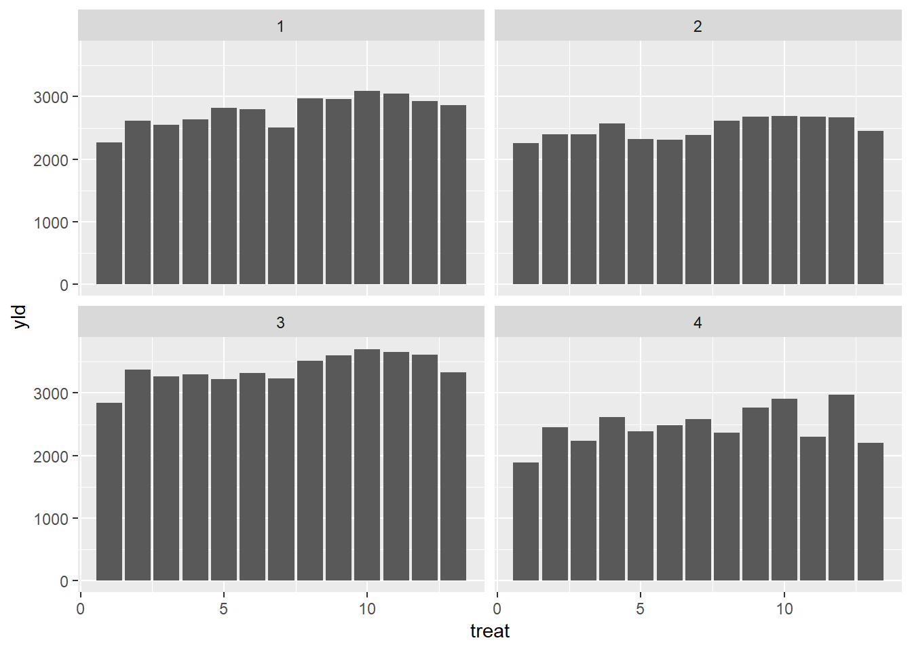
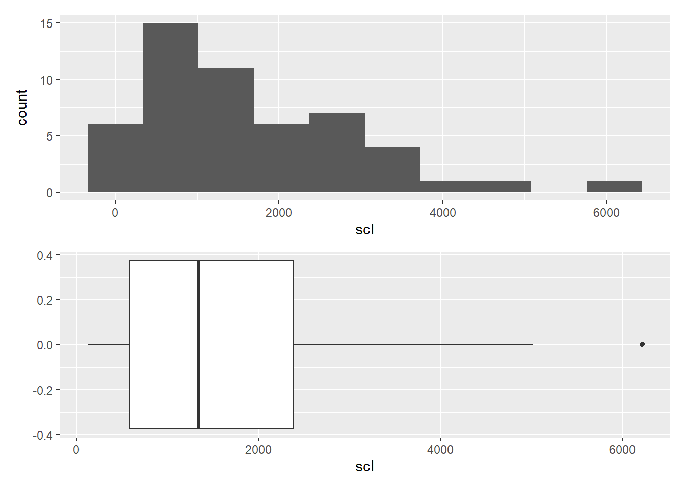
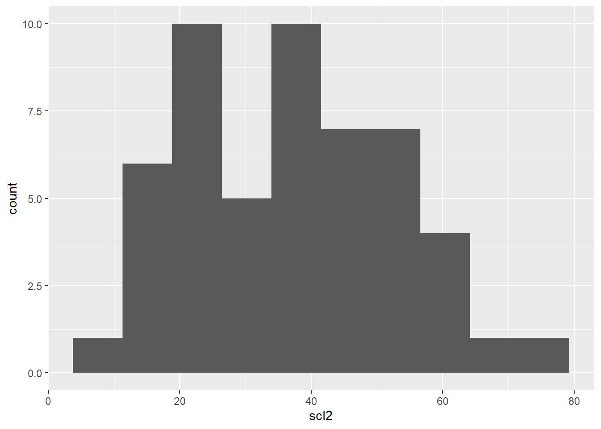
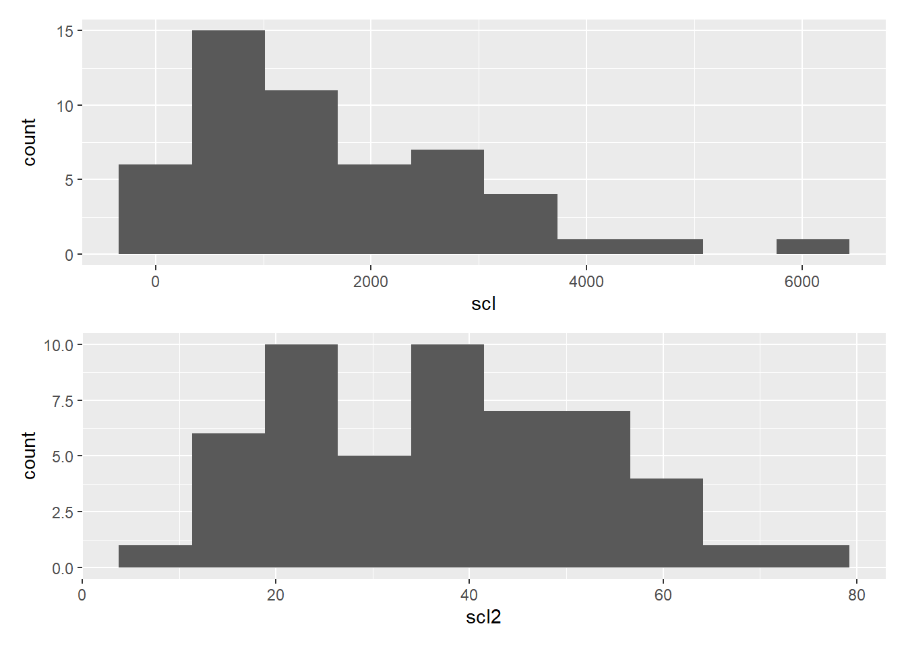

library(tidyverse)
library(readxl)
mofo <- read_excel("dados-diversos.xlsx","mofo")Transformar dados
Aula 7
mofo |>
ggplot(aes(treat, yld))+
geom_col()+
facet_wrap(~study)
Histograma
h1 <- mofo |>
ggplot(aes(x = scl))+
geom_histogram(bins = 10)Boxplot
i <- mofo |>
ggplot(aes(x = scl))+
geom_boxplot(bins = 10)
library (patchwork)
(h1 / i)
Média
#média
mean (mofo$scl)[1] 1639.096#para cada variável
summary(mofo) study treat inc scl yld
Min. :1.00 Min. : 1 Min. : 7.00 Min. : 119 Min. :1893
1st Qu.:1.75 1st Qu.: 4 1st Qu.:26.00 1st Qu.: 588 1st Qu.:2438
Median :2.50 Median : 7 Median :34.00 Median :1337 Median :2678
Mean :2.50 Mean : 7 Mean :35.10 Mean :1639 Mean :2780
3rd Qu.:3.25 3rd Qu.:10 3rd Qu.:41.25 3rd Qu.:2382 3rd Qu.:3055
Max. :4.00 Max. :13 Max. :76.00 Max. :6216 Max. :3702 #cria um novo conjunto, entra no mofo, então
mofo2 <- mofo |>
#cria a variável scl2, que é igual ao logarítimo (log) do número de escleródios (scl)
#mutate(scl2 = log(scl))
#cria a variável scl2, que é igual a raíz quadrada (sqrt) do número de escleródios (scl)
mutate(scl2 = sqrt(scl))
mofo2# A tibble: 52 × 6
study treat inc scl yld scl2
<dbl> <dbl> <dbl> <dbl> <dbl> <dbl>
1 1 1 76 2194 2265 46.8
2 1 2 53 1663 2618 40.8
3 1 3 42 1313 2554 36.2
4 1 4 37 1177 2632 34.3
5 1 5 29 753 2820 27.4
6 1 6 42 1343 2799 36.6
7 1 7 55 1519 2503 39.0
8 1 8 40 516 2967 22.7
9 1 9 26 643 2965 25.4
10 1 10 18 400 3088 20
# ℹ 42 more rowsh2 <- mofo2 |>
ggplot(aes(scl2))+
geom_histogram(bins = 10)
h2
h1 / h2
Modificar variáveis
#cria um novo conjunto com a aba survey do arquivo dados-diversos
survey <- read_excel("dados-diversos.xlsx", "survey")
#entra no survey, então
survey |>
#filtra por estado
filter(state == "RS") |>
#conta a variável do maior para o menor por padrão
count(species, residue) |>
#reordena uma coluna, do menor para o maior (n), maior para menor (-n), nome da variável
arrange(species) |>
#seleciona linhas por posição
#slice(1:2) |>
#renomear coluna
rename(res = residue) |>
#cria nova variável segudo uma condição de uma variável anterior
mutate(n_class = case_when (
n < 30 ~ "baixa",
TRUE ~ "Alta"))# A tibble: 4 × 4
species res n n_class
<chr> <chr> <int> <chr>
1 Fgra corn 147 Alta
2 Fgra soybean 255 Alta
3 Fspp corn 22 baixa
4 Fspp soybean 26 baixa